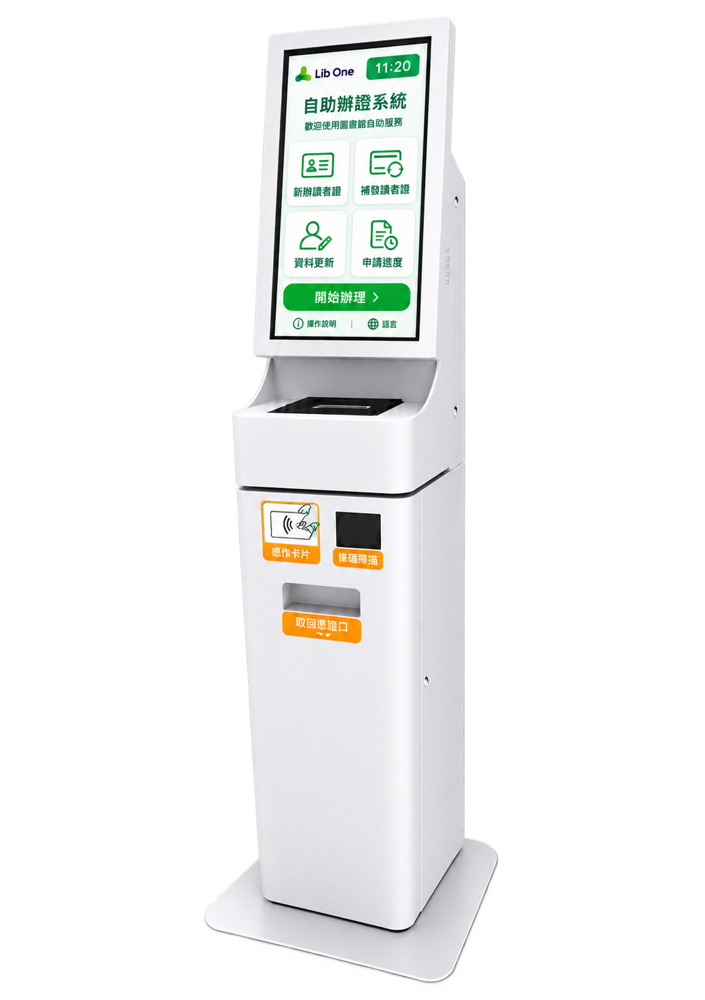

HyPass Self-Service Registration Kiosk
HyPass 圖書館智慧辦證服務站
快速核身、即時辦證，智慧服務全天候
整合證件辨識、讀者資格查核與借閱證開卡的落地式自助辦證站。
讀者掃描身分證、護照或居留證後，即可完成新辦、線上預辦開卡、展延與電子票證綁定，結果即時回寫館藏系統。
透過 HTTPS／REST API 介接 HyLib、LMS 與 SSO；交易完成後機台不留存個資與證件影像，適合設於服務台旁或 24 小時自助服務區，分流櫃台辦證作業。
公共圖書館大專校院圖書館無人圖書館智慧圖書館服務台周邊自助服務區會員制場館

產品特色
- 01
證件 OCR／MRZ 快速辨識
- 02
新辦、預辦開卡與展延一機完成
- 03
悠遊卡／一卡通綁定借閱
- 04
交易後不留存個資
- 05
繁中、簡中、英文多語介面
主要功能
CORE FUNCTIONS
- 身分證正反面、護照 MRZ 及居留證辨識，單一證件約 5～12 秒回傳結果。
- 新辦借閱證、線上預辦現場核驗開卡及既有借閱證展延。
- 重複辦證、欠費、停權與黑名單狀態查核。
- 借閱證卡號、UID 與悠遊卡／一卡通綁定，結果即時回寫館藏系統。
- 讀者聯絡資料查核與更新；選配 OTP 簡訊驗證、熱感列印與支付模組。
產品規格
SPECIFICATIONS
版本、型號與容量
- HYPASS-KIOSK-215S 標準型（21.5 吋）
- HYPASS-KIOSK-190C 精簡客製型（19 吋）
- HYPASS-KIOSK-215P 進階周邊型（含列印）
- 機台
- 落地立式防盜鋼板機身；可依需求評估桌上型機台。
- 顯示
- 21.5 吋 1920 × 1080 觸控螢幕；精簡型採 19 吋。
- 辨識
- 身分證正反面、護照 MRZ、IC 居留證；1D／2D 條碼與手機 App 條碼。
- 讀卡
- MIFARE Classic／DESFire、悠遊卡／一卡通，依需求配置。
- 系統
- REST API／HTTPS／JSON 介接 HyLib、LMS、SSO 與身分驗證服務；TLS 1.2 以上、權杖時效控管。
- 個資
- 交易完成後不於本機長期留存個資或證件影像。
- 維運
- 支援 24×7 運作，營運時段可用率目標 99% 以上；遠端維運、狀態監控與異常通知。
- 尺寸
- W 550 × D 550 × H 1650 mm（後側另突出 85 mm）。
實際支援證件、周邊與尺寸依專案確認。
相關產品
RELATED PRODUCTS